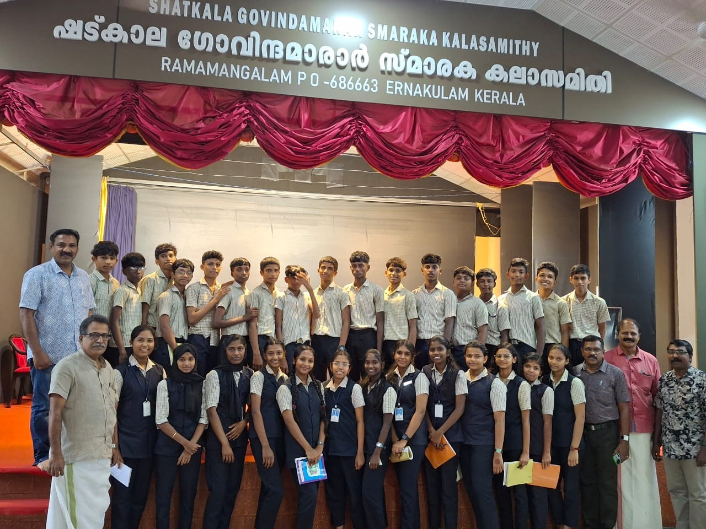
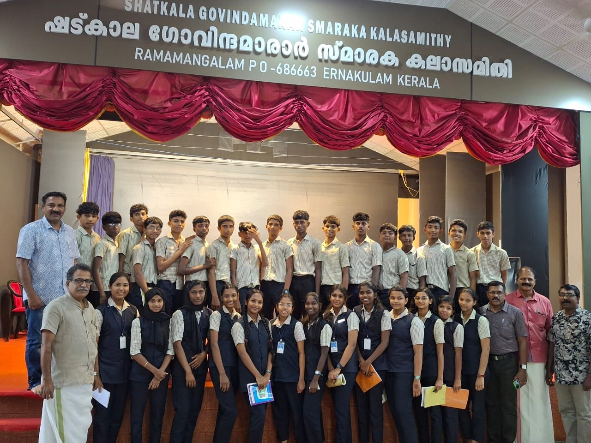

Career Guidance Cell
Empowering Future Choices
The Career Guidance Cell at GHSS Kadayiruppu plays a pivotal role in shaping the future of students by offering timely information, mentorship, and personalized support in exploring career opportunities. It aims to bridge the gap between academic learning and real-world career possibilities.
The cell conducts seminars and webinars on higher education, competitive exams, skill development, entrepreneurship, and job market trends. Renowned professionals, alumni, and career counselors are invited to share their journeys and interact with students.
Students are guided to identify their strengths, set goals, and make informed decisions regarding subject selection, entrance exams, scholarships, and vocational paths. Special sessions are held for students from rural or underprivileged backgrounds to ensure equal access to career opportunities.
Mock interviews, aptitude tests, resume-building workshops, and field visits are integral parts of the program. The cell also collaborates with various governmental and private career bodies for updated content and career expos.
- Career Counseling & Psychometric Testing
- Sessions on NEET, JEE, UPSC, PSC & More
- Workshops on Resume Writing & Soft Skills
- Interaction with Industry Experts & Alumni
- Career Fairs & Field Exposure Visits
 
